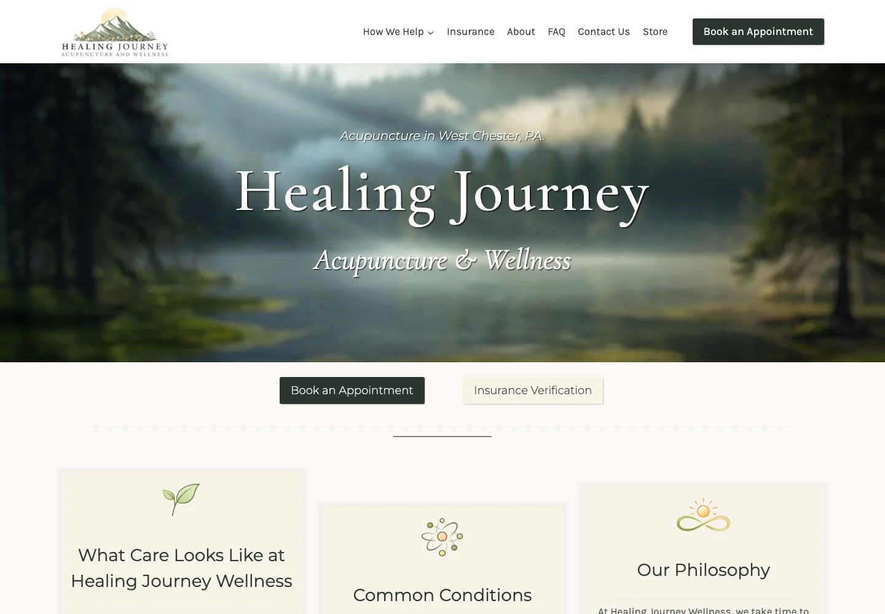
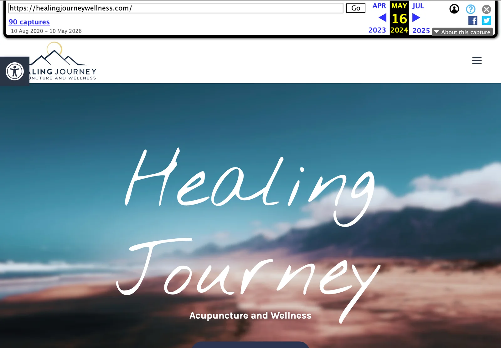
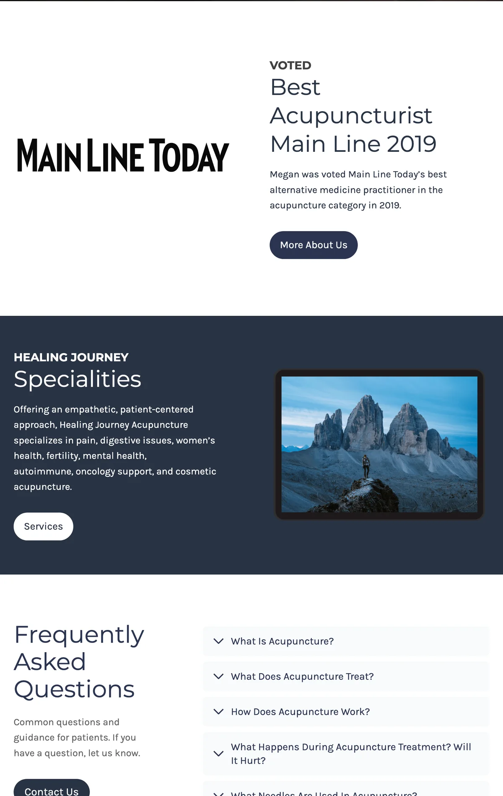
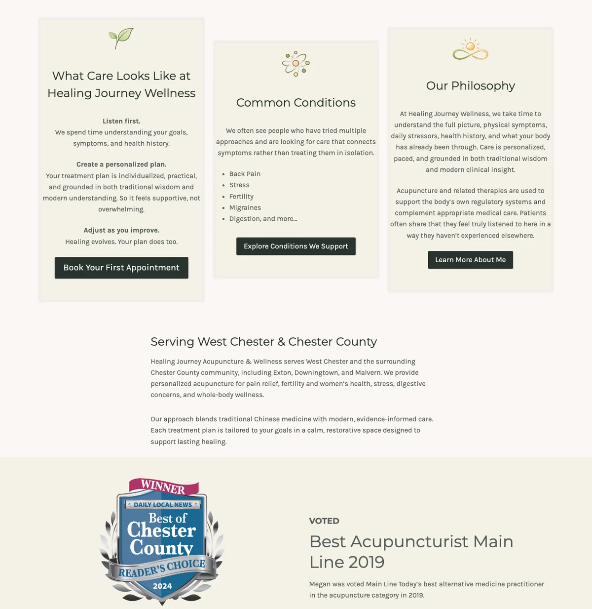

1
Information architecture
Reorganized the site around patient questions, conditions, trust, and next steps.
Case study · Healthcare · Digital transformation
I repositioned and rebuilt Healing Journey Acupuncture & Wellness across brand, messaging, information architecture, conversion pathways, local search, and commerce.

Overview
The inherited site contained useful information and years of credibility, but it asked prospective patients to do too much work. Important answers were buried in long pages, services were broadly framed, and the route from discovery to booking was inconsistent.
Healing Journey operates within a deliberate capacity model, so the goal was not traffic or appointment growth at any cost. The goal was to help the right people understand the practice, determine fit, and take the appropriate next step with less uncertainty.
Measured after launch
+21%
Organic search sessions
+26%
Average engagement time
+72%
Google Search click-through rate
22.4 → 14.7
Average Google Search position
Engaged organic sessions increased 21% and events per organic session increased approximately 20%. For the priority query acupuncture west chester pa, clicks increased 57%, click-through rate rose from 1.29% to 2.33%, and average position moved from 10.95 to 9.33.
The challenge
The original WordPress site reflected years of incremental additions. A visitor could find expertise, services, awards, and educational material, but the experience did not consistently answer the questions that shape a healthcare decision: Is this local? Is this for me? What will care feel like? Can I use insurance? What should I do next?
Before and after

Customer journey
Connect local and condition-based searches to a relevant page.
Establish location, specialty, and practice character immediately.
Explain what care looks like and which concerns the practice supports.
Use philosophy, credentials, awards, and practical information to reduce uncertainty.
Make booking, insurance verification, contact, and shopping easy to find.
What changed
1
Reorganized the site around patient questions, conditions, trust, and next steps.
2
Introduced a calmer, more contemporary identity aligned with the care experience.
3
Rewrote the experience in clear, specific language grounded in patient needs.
4
Elevated booking and insurance verification at the moments they matter.
5
Built locally relevant service and condition pages with clearer search intent.
6
Integrated an online wellness store into the same brand and navigation system.


Implementation
I began by auditing the inherited content, navigation, conversion paths, and search footprint. I then mapped the patient journey, established a clearer information architecture, and rebuilt the brand and copy around that structure. The final phase connected the WordPress experience to booking, insurance verification, local search, and the store, followed by responsive QA and measurement.
The important decision was to treat the website as an operating system for the customer experience rather than a collection of pages. Every major element had to support comprehension, trust, self-selection, or action.
What the data showed
Not every top-line search metric increased. Overall Google impressions and clicks declined as broad informational visibility contracted, particularly around a legacy cosmetic-acupuncture page. At the same time, the remaining search visibility produced a higher click-through rate, average position improved, priority local-query performance strengthened, and organic visitors engaged more deeply with the site.
That distinction matters for a capacity-constrained care practice. Maximum reach was never the objective. Relevance, trust, and an efficient path to the right next step were.
The result
Healing Journey now presents a cohesive experience from first search through booking, insurance verification, and commerce. The work demonstrates how brand, content, UX, technology, and measurement can move together as one transformation.